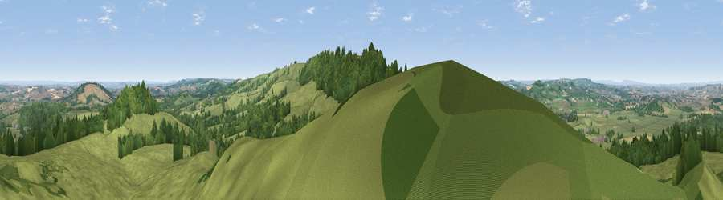

Viewpoint near Chedington
#6355 in England · top 14% of its area beats it · near Chedington · access?Where it is
The exact computed spot (ST 49225 06325). Click the marker for map links.
Public access: no public right of way or access land is recorded at this exact spot — it may be on private land. Computed from Natural England's CRoW access layer and OpenStreetMap rights of way — not the legal definitive map. Always verify locally.
The view, rendered

A 360° render of this exact spot computed from the terrain model, tree cover and land cover — summer colours, afternoon light, calibrated against photographs of famous viewpoints. Real trees, hedges and buildings will differ in detail.
The panorama
Grey silhouette: terrain skyline in each direction (720 bearings, Earth curvature and refraction included). Dashed green: skyline with trees (+15 m) and buildings (+8 m) as obstacles. Blue strip: how far the ground is visible on each bearing.
Where the view opens
Wedge length = distance to the farthest visible ground on that bearing (vegetation-aware). Rings at 10, 25 and 50 km.
What fills the view
71% grassland · 24% woodland · 4% cropland · 1% built-up
Angular shares of the visible panorama (visual magnitude), not map area. Landscape diversity 0.33 (0–1 Shannon).
Key numbers
More beautiful places nearby
The staircase of upgrades: each row has a higher view potential than everything closer. Driving times are estimates from straight-line distance, calibrated against real road routing — check an actual route before setting out.
| Place | Direction | Drive | Score |
|---|---|---|---|
| Viewpoint near Chedington | S · 1 km | ~2 min | 70.5 |
| Viewpoint near Chedington | SSE · 1 km | ~4 min | 70.7 |
| Viewpoint near Chedington | S · 3 km | ~7 min | 71.8 |
| Viewpoint near North Poorton | SSE · 7 km | ~14 min | 77.0 |
| Lewesdon Hill | SW · 8 km | ~15 min | 83.3 |
| Viewpoint near North Chideock | SSW · 16 km | ~28 min | 87.1 |
| Golden Cap | SSW · 16 km | ~29 min | 88.7 |
| The Knoll | SSE · 19 km | ~33 min | 91.0 |
50.85420, -2.72270 · source: screening · position refined by local search. Computed location — check access rights before visiting.